一个充满创意与冒险的 Minecraft 世界。踏上列车，穿过大桥与原野，去发现由玩家亲手筑造的每一处风景。
世界装载 机械动力 mod，你可以自由设计并铺设属于你自己的轨道线路，让列车穿梭在你亲手建造的城市之间。
这里不限制你的创意！找一块空地即可开始打造你的建筑——当然，创造模式 也随时为你敞开。
从地标景观到轨道站点，每一帧都是旅途中值得驻足的风景。
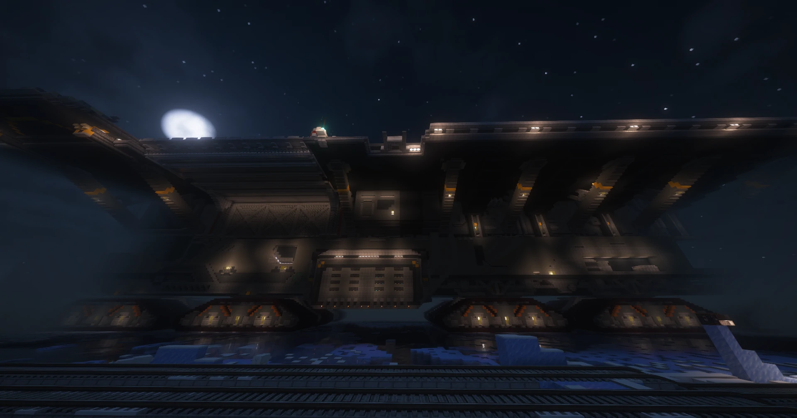
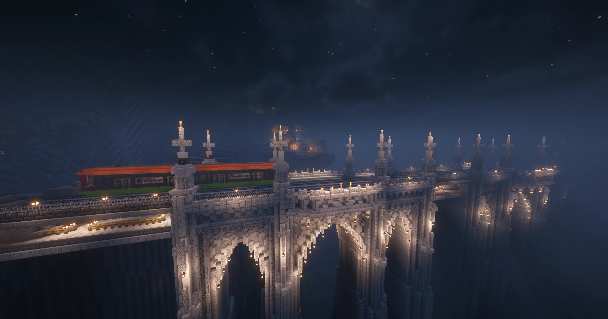
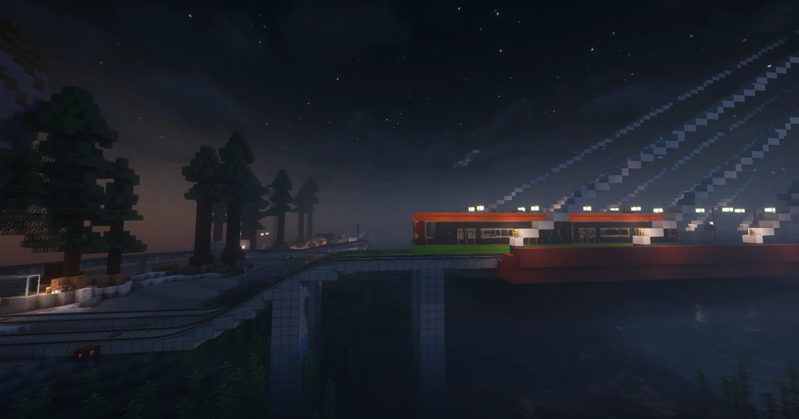
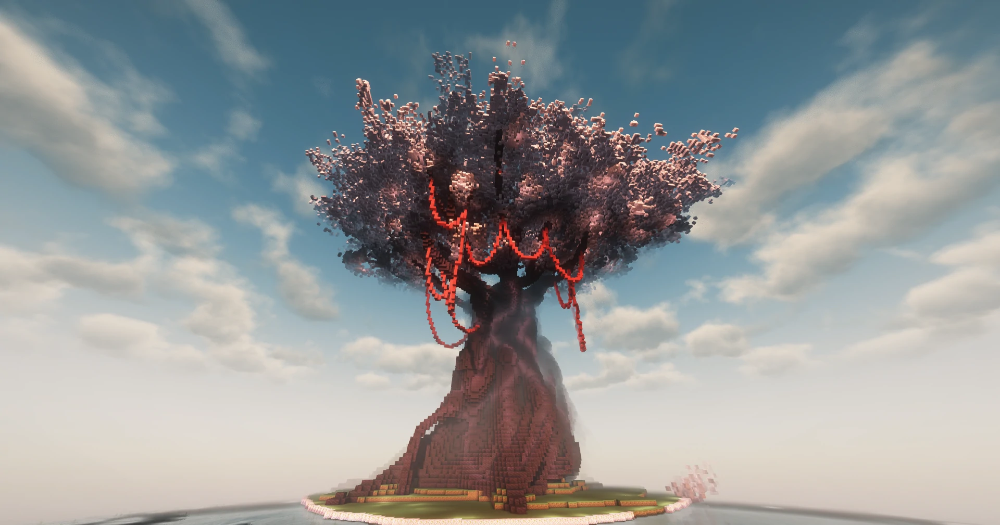
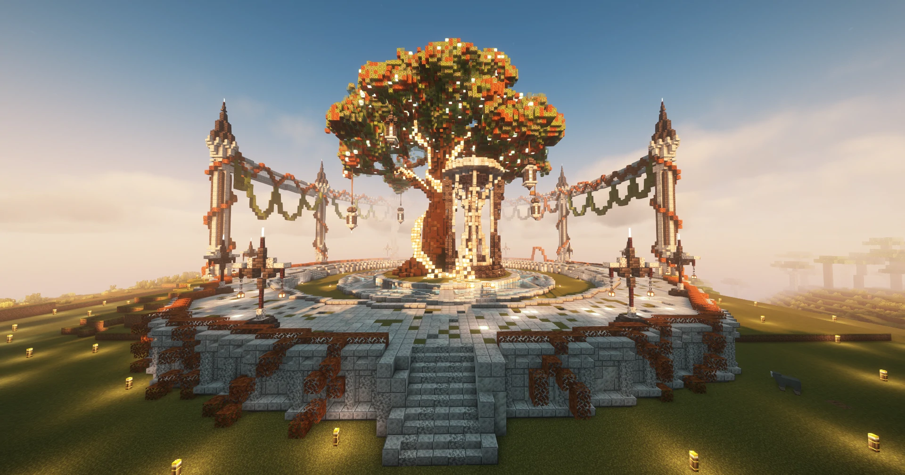
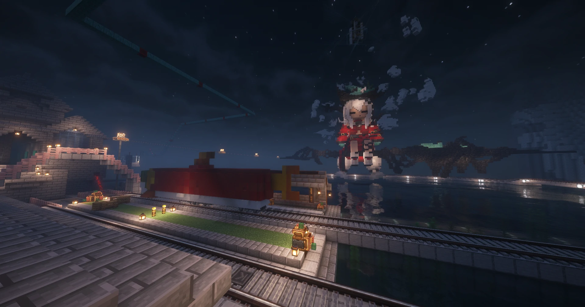
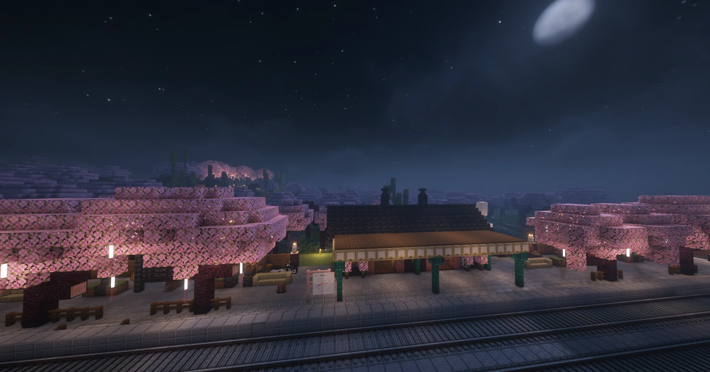
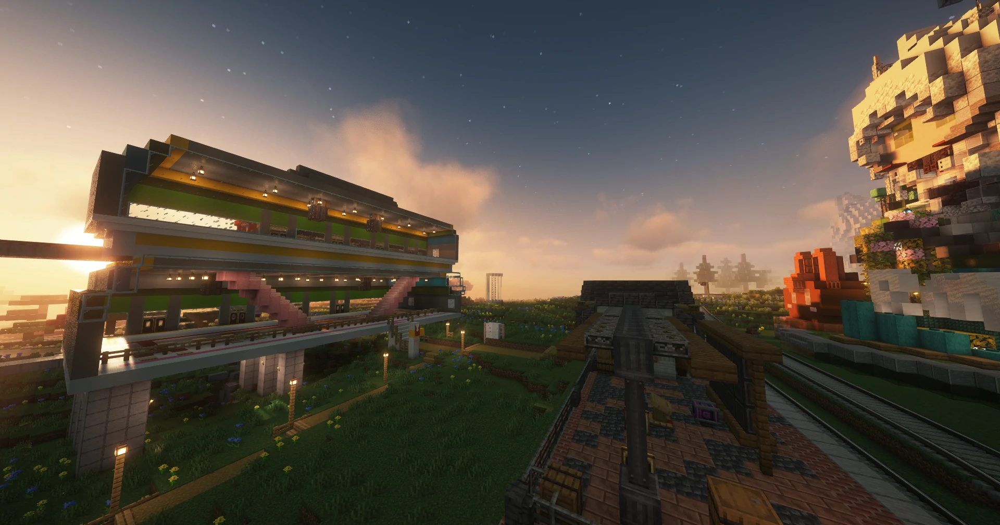
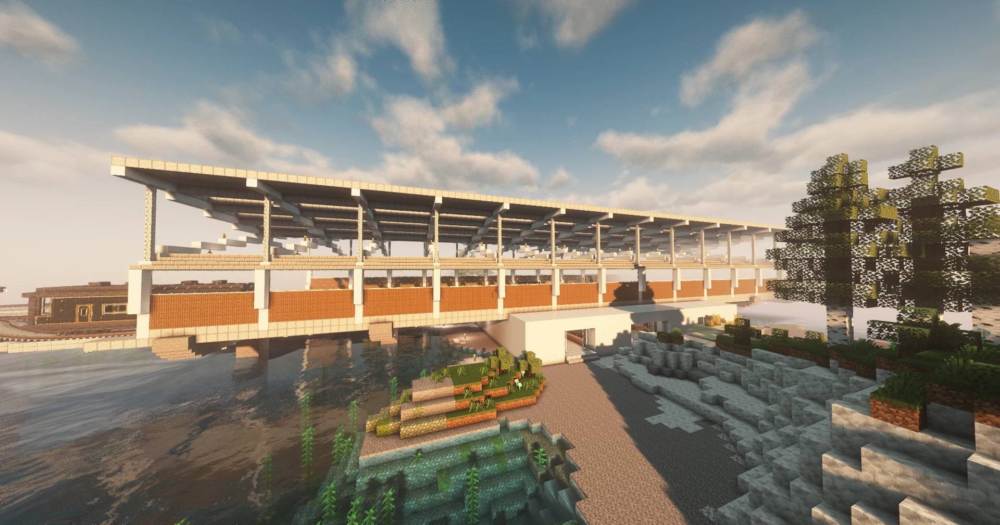
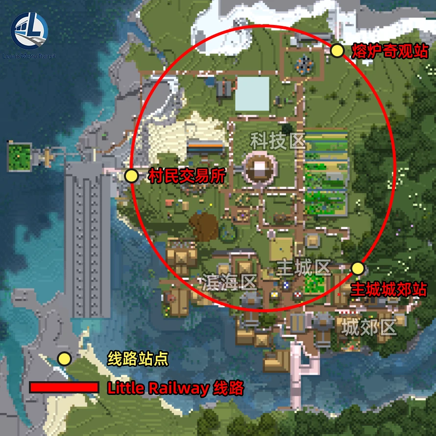
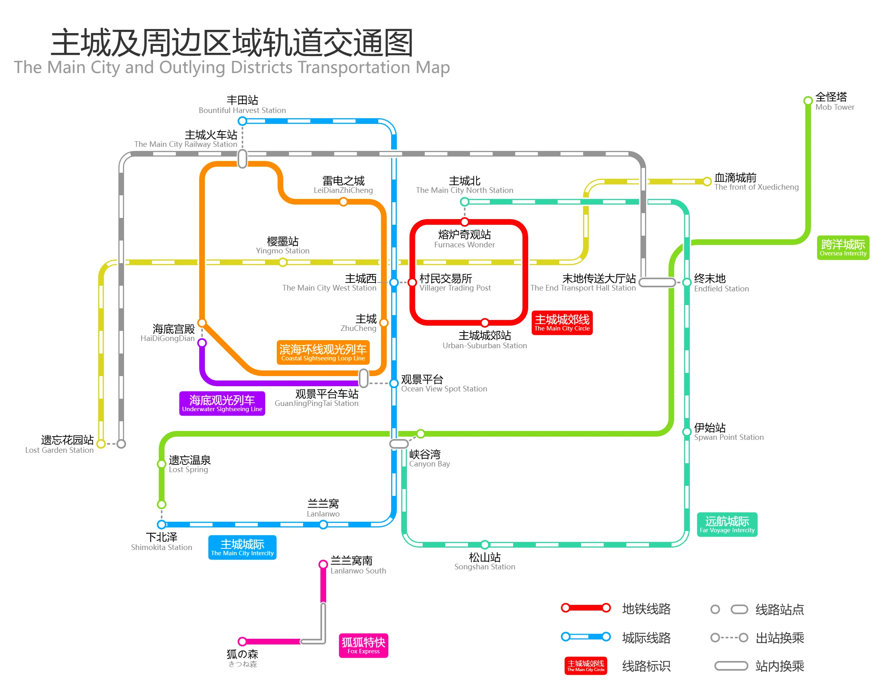
世界建有多条便捷的轨道交通线路，方便市民与旅客通勤、观光，将主城与周边区域温柔地串联在一起。